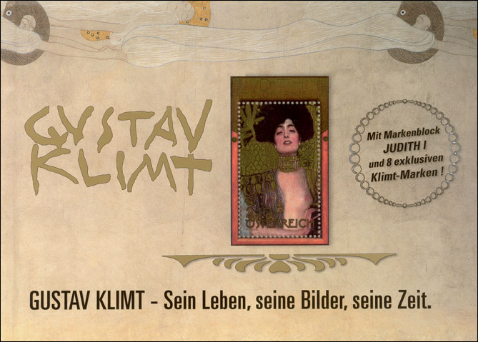
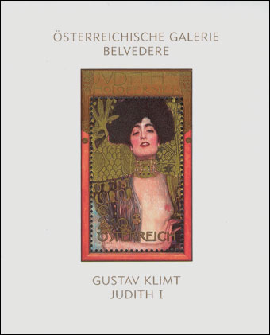
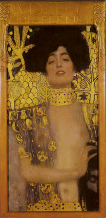
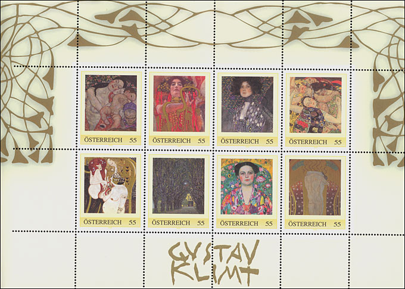
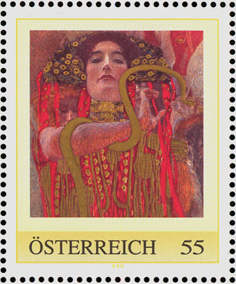
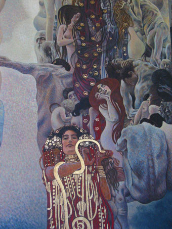
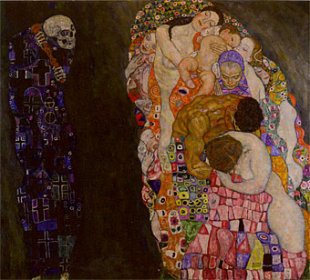
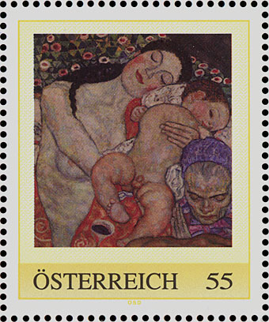
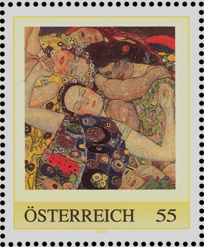
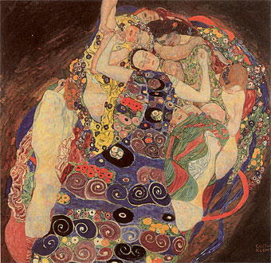

|
|


Klimt Stamp Book of Austria Post

Gustav Klimt (1862-1918) was one of the most innovative and controversial artists of the early twentieth century. Klimt’s highly decorative, erotic female figures were influenced by an enormous range of sources: classical Greek art, Byzantine mosaics, late-medieval painting, the woodcuts of Albrecht Durer, photography and the Symbolist art of Max Klinger. As a co-founder of the Vienna Secession, a group of artists and architects who formed their own exhibition society and denounced the classical academic training of the time, his work embodied the high-keyed erotic, psychological and aesthetic preoccupations of fin-de-siècle Viennese intellectuals.
The Austria Post dedicated to the Austrian most famous painter a stamp book, a wonderful combination of philately, history of art, excellent art reproductions and interesting biographical data about the artist and his time. Here is the front page of the book:

Translations: Gustav Klimt - His life, his Pictures, his time. With the miniature sheet JUDITH 1 and 8 exclusive Klimt stamps. Just to mention that the mentioned stamps don't belong to the usual issues bur represent so called personalized stamps. They are provided with face values and are perfectly valid for postage.
The first philatelic material that appears in the book is the "Judith and Holofernes" (known as Judith 1 painting) miniature sheet, issued on 10.10.2003. We display below the sheet and the original painting. For more information please refer to our earlier page, dedicated to Judith stamps and paintings.
|
 |
 |
A big advantage of buying the Klimt stamp book is that it contains the miniature sheet of eight stamps, shown below. Just to mention that the face values of the above sheet and the eight stamps cover already a half of the total price, which makes this book a very good value for every amateur of art and philately.

In what follows we will describe, by using information presented in the stamp book, some of the stamps shown on the above sheet. The second top - left is the picture "Medicine", presented in the 10th Exhibition of the so called "Secessionists" (March 2001). The picture was under a strong attack of the public. Especially were criticized the floating nude women, for being expressions of a an "obscene art" and of "painted pornography". The painting was destroyed by fire in 1945.
|
 |
 |
The first stamp of the miniature sheet has the title Death and Life (Tod und Leben). It was painted and changed between 1908 - 1916, and it is exhibited at the Leopoldmuseum, Vienna. This painting won the first price of an exhibition in Rome in 1911. Initially the background was in gold but later the artist painted the gold over with black.
|
 |
 |
The last on the first row of the miniature sheet we see the painting The Virgin (Die Jungfrau), painted in 1913. It is one of the jewels of the Národny Galerie in Prague collection.
|
 |
 |
This ends our presentation of the Austrian Post stamp book that is dedicated to Gustav Klimt. Please notice that we show here just a small excerpt, and that there are many other images, and a lot of information, that aren't covered above. All in all, this stamp book represents one of the most inspired and accomplished achievement in the field of popularizations of philately and art. Without doubts this is one of the masterpieces of the webmasters' art on stamps collection. Highly recommended!
Technical note: Starting by this page the most of the images will be presented in an enhanced quality. Enjoy! Nevertheless the resolution will be kept low (80 dpi or less) in order to not infringe owners copyrights, but to serve journalistic and educational purposes (fair use). Victor Manta., AIJP member.
Links on this site:
- Gustav Klimt on
Postal Stamps
- Judith as Shown on Postal Stamps